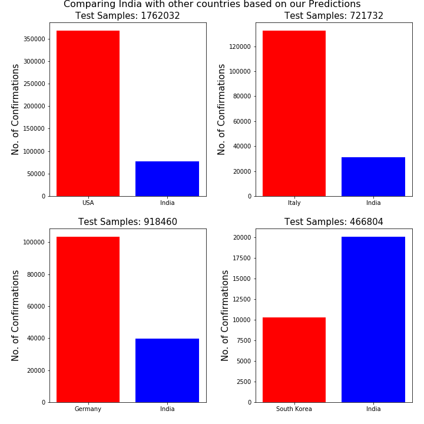

Insights of Covid'19 in India
Insights of Covid'19 in India
Get the live information about the Novel Corona Virus spread in India.
Last updated on 16/04/2020 at 18:09:37
Click here to get the list of the data source.
| Confirmed |
Active |
Recovered |
Deaths |
Recovery Rate(%) |
Death Rate(%) |
| 12959 (+589) |
10939 |
1592 (+84) |
428 (+6) |
12.3 |
3.3 |
| States |
Confirmed |
Active |
Recovered |
Deaths |
Recovery Rate(%) |
Death Rate(%) |
Last Updated |
| Maharashtra |
3081 |
2599 |
295 |
187 |
9.6 |
6.1 |
15/04/2020 |
| Delhi |
1578 |
1505 |
41 |
32 |
2.6 |
2.0 |
14/04/2020 |
| Tamil Nadu |
1267 |
1072 |
180 |
15 |
14.2 |
1.2 |
15/04/2020 |
| Rajasthan |
1104 |
946 |
147 |
11 |
13.3 |
1.0 |
15/04/2020 |
| Madhya Pradesh |
1115 |
998 |
64 |
53 |
5.7 |
4.8 |
16/04/2020 |
| Gujarat |
871 |
771 |
64 |
36 |
7.3 |
4.1 |
15/04/2020 |
| Uttar Pradesh |
735 |
666 |
57 |
12 |
7.8 |
1.6 |
15/04/2020 |
| Telangana |
650 |
515 |
117 |
18 |
18.0 |
2.8 |
15/04/2020 |
| Andhra Pradesh |
534 |
500 |
20 |
14 |
3.7 |
2.6 |
16/04/2020 |
| Kerala |
387 |
167 |
218 |
2 |
56.3 |
0.5 |
15/04/2020 |
| Jammu and Kashmir |
314 |
274 |
36 |
4 |
11.5 |
1.3 |
16/04/2020 |
| Karnataka |
313 |
220 |
80 |
13 |
25.6 |
4.2 |
16/04/2020 |
| West Bengal |
231 |
182 |
42 |
7 |
18.2 |
3.0 |
15/04/2020 |
| Haryana |
213 |
148 |
62 |
3 |
29.1 |
1.4 |
14/04/2020 |
| Punjab |
186 |
146 |
27 |
13 |
14.5 |
7.0 |
15/04/2020 |
| Bihar |
74 |
44 |
29 |
1 |
39.2 |
1.4 |
15/04/2020 |
| Odisha |
60 |
40 |
19 |
1 |
31.7 |
1.7 |
14/04/2020 |
| Uttarakhand |
37 |
28 |
9 |
0 |
24.3 |
0.0 |
14/04/2020 |
| Himachal Pradesh |
35 |
20 |
13 |
2 |
37.1 |
5.7 |
15/04/2020 |
| Chhattisgarh |
33 |
10 |
23 |
0 |
69.7 |
0.0 |
16/04/2020 |
| Assam |
34 |
28 |
5 |
1 |
14.7 |
2.9 |
16/04/2020 |
| Jharkhand |
28 |
26 |
0 |
2 |
0.0 |
7.1 |
13/04/2020 |
| Chandigarh |
21 |
12 |
9 |
0 |
42.9 |
0.0 |
15/04/2020 |
| Ladakh |
18 |
4 |
14 |
0 |
77.8 |
0.0 |
16/04/2020 |
| Andaman and Nicobar Islands |
11 |
0 |
11 |
0 |
100.0 |
0.0 |
16/04/2020 |
| Goa |
7 |
1 |
6 |
0 |
85.7 |
0.0 |
15/04/2020 |
| Puducherry |
7 |
6 |
1 |
0 |
14.3 |
0.0 |
10/04/2020 |
| Meghalaya |
7 |
6 |
0 |
1 |
0.0 |
14.3 |
15/04/2020 |
| Manipur |
2 |
1 |
1 |
0 |
50.0 |
0.0 |
06/04/2020 |
| Tripura |
2 |
1 |
1 |
0 |
50.0 |
0.0 |
10/04/2020 |
| Mizoram |
1 |
1 |
0 |
0 |
0.0 |
0.0 |
26/03/2020 |
| Arunachal Pradesh |
1 |
0 |
1 |
0 |
100.0 |
0.0 |
15/04/2020 |
| Dadra and Nagar Haveli |
1 |
1 |
0 |
0 |
0.0 |
0.0 |
06/04/2020 |
| Nagaland |
1 |
1 |
0 |
0 |
0.0 |
0.0 |
12/04/2020 |
Data of last 14 days from the tests conducted by Indian Council of Medical Research(ICMR)
| Date |
Total Sample Tested |
Total Positive Cases |
| 02/04/2020 |
55851 |
2056 |
| 03/04/2020 |
69245 |
2653 |
| 04/04/2020 |
79950 |
3113 |
| 05/04/2020 |
89534 |
3554 |
| 06/04/2020 |
101068 |
4135 |
| 07/04/2020 |
114015 |
4616 |
| 08/04/2020 |
127919 |
5114 |
| 09/04/2020 |
144910 |
5705 |
| 10/04/2020 |
161330 |
6872 |
| 11/04/2020 |
179374 |
7703 |
| 12/04/2020 |
195748 |
8312 |
| 13/04/2020 |
217554 |
9341 |
| 14/04/2020 |
244893 |
10307 |
| 15/04/2020 |
274599 |
11297 |

Real Time Analysis of the trend of Covid'19 spread in India using the data of last 14 days
| Date |
Daily Confirmations |
Daily Recoveries |
Daily Deaths |
Total Confirmations |
Total Recoveries |
Total Deaths |
| 03 April |
560 |
39 |
14 |
3105 |
230 |
86 |
| 04 April |
579 |
56 |
13 |
3684 |
286 |
99 |
| 05 April |
605 |
43 |
22 |
4289 |
329 |
121 |
| 06 April |
489 |
65 |
16 |
4778 |
394 |
137 |
| 07 April |
573 |
75 |
26 |
5351 |
469 |
163 |
| 08 April |
565 |
96 |
20 |
5916 |
565 |
183 |
| 09 April |
809 |
55 |
46 |
6725 |
620 |
226 |
| 10 April |
873 |
154 |
20 |
7598 |
774 |
246 |
| 11 April |
848 |
198 |
42 |
8446 |
972 |
288 |
| 12 April |
765 |
114 |
43 |
9211 |
1086 |
331 |
| 13 April |
1242 |
107 |
27 |
10453 |
1193 |
358 |
| 14 April |
1034 |
166 |
35 |
11487 |
1359 |
393 |
| 15 April |
883 |
149 |
29 |
12370 |
1508 |
422 |
| 16 April |
589 |
84 |
6 |
12959 |
1592 |
428 |


Predicting the Future of India using Artifitial Intelligence
The below predictions are completely based on the daily data of confirmed cases from Media & Govt. Websites and the data from ICMR.
Advanced Deep Learning algorithms are providing the information of the future.
| Data Source |
Today's Prediction |
| Data of Confirmations from Media & Govt. Websites |
13880 |
| Data of confirmations from ICMR |
12716 |
The above prediction using the data from ICMR is based on time but now, predicting the Total Number of Confirmations based on Total number of samples tested.
Using the data from ICMR, a linear statistical model is predicting the number of confirmations in India based on Total Number of Samples Tested.
The predictions are made by considering the current situation & the number of test samples doesnot change drastically with respect to time.
If ICMR tests 1762032 samples, then India may have approximately 76965 confirmed cases, compared to USA which has approximately 367758 confirmed cases.
If ICMR tests 721732 samples, then India may have approximately 31282 confirmed cases, compared to Italy which has approximately 132547 confirmed cases.
If ICMR tests 918460 samples, then India may have approximately 39921 confirmed cases, compared to Germany which has approximately 103375 confirmed cases.
If ICMR tests 466804 samples, then India may have approximately 20087 confirmed cases, compared to South Korea which has approximately 10331 confirmed cases.
From these above predictions, let's have a look at how good or bad India is fighting against The Novel Corona Virus.

Copyright 2020.
All rights reserved.
Made by Rajarshi Bhadra